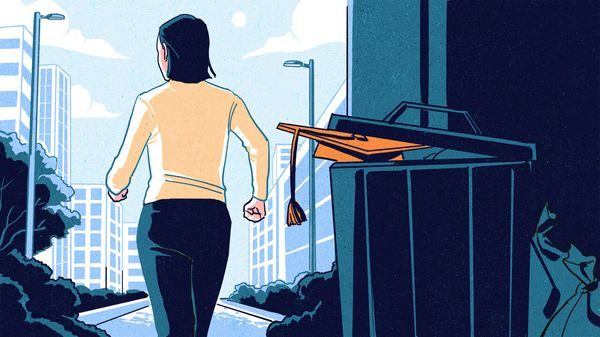
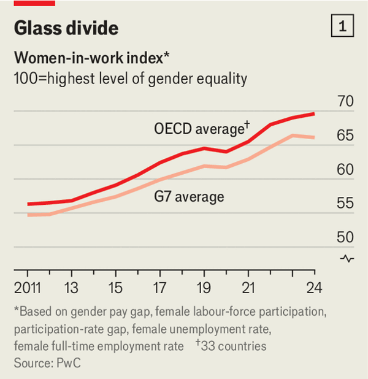
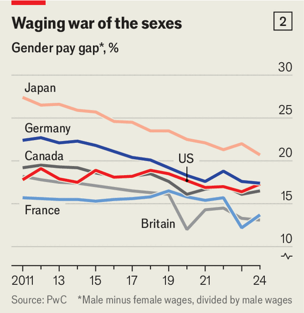

Jul 09, 2026 06:36 AM

WOMEN HAVE made extraordinary gains in the past few decades across the rich world. They now outnumber men on university campuses in virtually every wealthy country. At work, many have been enthusiastically “leaning in”, as Sheryl Sandberg, then Facebook’s second-in-command, urged them to do in a book in 2013. Their representation among the highest-paying professions, including medicine and the law, has nearly tripled in America since 1980. At the turn of the century a British patient was twice as likely to see a man. Last year the number of female physicians exceeded those of men for the first time, according to Britain’s General Medical Council, a public body.
Recently, however, the most highly qualified cohort of women in human history has often appeared to be leaning out. In 2024 a study by S&P Global, a compiler of indices, found that women’s share of executive positions in listed American companies fell for the first time in 2023 after nearly 20 years of uninterrupted growth. In 2025 women secured 38% of new board seats at companies in the S&P 500 index of large American firms, down from 42% the previous year and prolonging a retreat from their peak in 2020.
In its last round of partner promotions, in 2024, Goldman Sachs named a smaller share of female partners than in the previous round, for the first time in more than a decade. A year later the share of new female managing directors at the Wall Street bank fell, too. Last month Marianne Lake, a female frontrunner to succeed Jamie Dimon at JPMorgan Chase, was relegated and another, Jennifer Piepszak, bowed out last year, leaving an unusually pale and male lineup for the top job.

It is not just at the top that the progress of women in work is stalling or even going into reverse (see chart 1). Across 33 members of the OECD, a club of mostly rich countries, the share of employed women in full-time work declined from 78.1% in 2023 to 76.8% a year later—a small dip but also the first one since PwC, a consultancy, started tracking the data 15 years ago. In March 78.5% of American women aged 25-54 were in the labour force, an all-time high. Since then their participation has fallen by almost a percentage point, a much sharper fall than seen among men.
University-educated American women with young families appear to be leading the retreat. Their labour-force participation rate took a turn in 2023 after decades of improvement, and has fallen every year since. Last year marked the sharpest drop in participation by mothers with young children in four decades.
After consistently closing for years, the gender pay gap is opening up again, too. In America it widened in both 2023 and 2024, the first consecutive two-year decline in 60 years. In 2024 it also widened (on PwC’s slightly different measure) in other rich countries, including Canada and France (see chart 2). For British women in their 40s, who were starting their careers when Ms Sandberg was telling them to lean in, the gap likewise increased.

It also seems that women’s professional aspirations no longer match men’s. An annual survey published in December 2025 by McKinsey, a consultancy, and Lean In, a non-profit founded by Ms Sandberg and named after her book, asks respondents to indicate their interest in climbing up the corporate ladder. Between 2019 and 2023 the share of both men and women keen on a promotion rose from seven in ten to eight in ten. By 2025 it had risen to nearly nine in ten for men but remained flat for women. For female entry-level workers it was just 69%. PwC also finds a persistent gap in men’s and women’s intentions to ask for a bigger job.
One reason for some of these reversals may have to do with the arithmetical aftermath of the covid-19 pandemic. Labour economists caution that disproportionate numbers of low-wage female workers lost their jobs during the lockdowns, artificially narrowing the gender pay gap. Some of the recent widening may reflect those women returning to the labour market. Still, the gap’s expansion half a decade after lockdowns ended suggests something else could be at play.
Difficulty finding child care is another potential culprit. Although nurseries have become more affordable in some rich countries lately thanks to subsidies, supply is often constrained. That means frequent long waiting lists and staff shortages. Germany, considered to have affordable child care, still lacks more than 300,000 nursery places for children under three.
At the same time, especially across swathes of Donald Trump’s America, diversity, equity and inclusion have become dirty words. The federal government is proudly dismantling DEI policies. So, more subtly, are many companies that do not want to cross the alpha-male-in-chief. A few years ago Mr Dimon, then a champion of progressive causes, would probably not have dreamed of an all-male shortlist of names to succeed him. ■
For more expert analysis of the biggest stories in economics, finance and markets, sign up to Money Talks, our weekly subscriber-only newsletter.